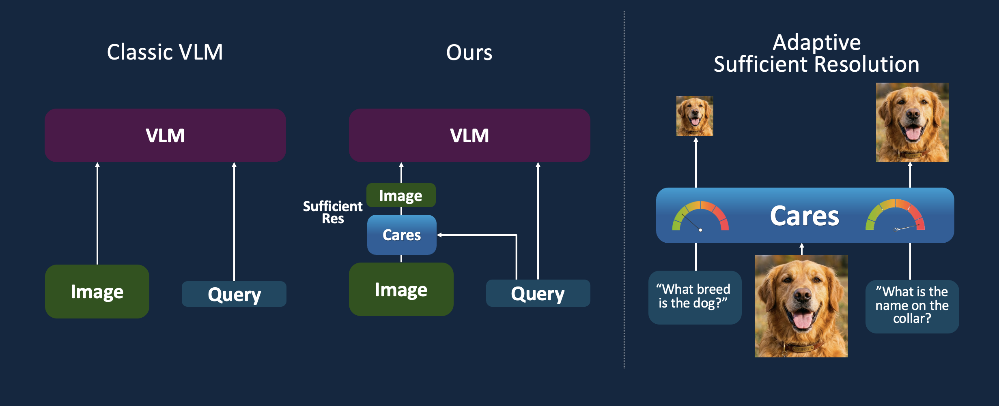

CARES
Context-Aware Resolution Selector for Vision Language Models

Context-Aware Resolution Selector for Vision Language Models

This approach utilizes a compact classifier built on SmolVLM features. It is trained to categorize queries into specific resolution buckets based on the visual complexity of the task.
Based on a fine-tuned Granite-Docling (258M) model, this approach predicts the optimal resolution directly as text. This provides massive benefits in terms of applicability and ease of hosting via frameworks like vLLM or Ollama.
Benchmark performance and estimated prefill-stage savings for Cost (measured in FLOPS for local models or $ for API models).
| Model | Ai2D | ChartQA | DocVQA | OCRBench | SeedBench-2 | MMMU | RealWorldQA | InfoVQA | MathVista | Average | ||||||||||
|---|---|---|---|---|---|---|---|---|---|---|---|---|---|---|---|---|---|---|---|---|
| Score | Cost | Score | Cost | Score | Cost | Score | Cost | Score | Cost | Score | Cost | Score | Cost | Score | Cost | Score | Cost | Score | Cost | |
| Granite-Vision 2B | 0.74 | - | 0.86 | - | 0.90 | - | 0.80 | - | 0.72 | - | 0.29 | - | 0.17 | - | 0.35 | - | 0.48 | - | 0.59 | - |
| + CARES | 0.73 | -67% | 0.87 | -69% | 0.90 | -68% | 0.80 | -68% | 0.72 | -44% | 0.29 | -85% | 0.19 | -72% | 0.40 | -72% | 0.48 | -22% | 0.60 | -63% |
| + CARES-VR | 0.71 | -81% | 0.84 | -81% | 0.88 | -82% | 0.77 | -75% | 0.72 | -10% | 0.30 | -84% | 0.15 | -82% | 0.39 | -81% | 0.44 | -25% | 0.58 | -67% |
| InternVL3-8B | 0.84 | - | 0.86 | - | 0.92 | - | 0.85 | - | 0.79 | - | 0.56 | - | 0.68 | - | 0.72 | - | 0.69 | - | 0.77 | - |
| + CARES | 0.84 | -66% | 0.86 | -68% | 0.92 | -69% | 0.85 | -70% | 0.79 | -44% | 0.56 | -86% | 0.68 | -82% | 0.74 | -72% | 0.69 | -22% | 0.77 | -64% |
| + CARES-VR | 0.84 | -86% | 0.86 | -81% | 0.92 | -80% | 0.85 | -78% | 0.72 | -84% | 0.55 | -85% | 0.68 | -82% | 0.74 | -81% | 0.68 | -31% | 0.76 | -76% |
| Qwen2.5-VL-72B | 0.87 | - | 0.87 | - | 0.96 | - | 0.75 | - | 0.81 | - | 0.62 | - | 0.77 | - | 0.73 | - | 0.74 | - | 0.79 | - |
| + CARES | 0.87 | -85% | 0.84 | -77% | 0.95 | -84% | 0.76 | -64% | 0.79 | -77% | 0.62 | -86% | 0.79 | -82% | 0.84 | -72% | 0.74 | -7% | 0.80 | -70% |
| GPT-4o | 0.78 | - | 0.56 | - | 0.80 | - | 0.77 | - | 0.76 | - | 0.57 | - | 0.61 | - | 0.75 | - | 0.64 | - | 0.69 | - |
| + CARES | 0.78 | -60% | 0.56 | -60% | 0.80 | -36% | 0.75 | -33% | 0.75 | -47% | 0.56 | -85% | 0.61 | -84% | 0.73 | -76% | 0.61 | -17% | 0.68 | -55% |
@misc{kimhi2025carescontextawareresolutionselector,
title={CARES: Context-Aware Resolution Selector for VLMs},
author={Moshe Kimhi and Nimrod Shabtay and Raja Giryes and Chaim Baskin and Eli Schwartz},
year={2025},
eprint={2510.19496},
archivePrefix={arXiv},
primaryClass={cs.CV}
}
 Code
Code